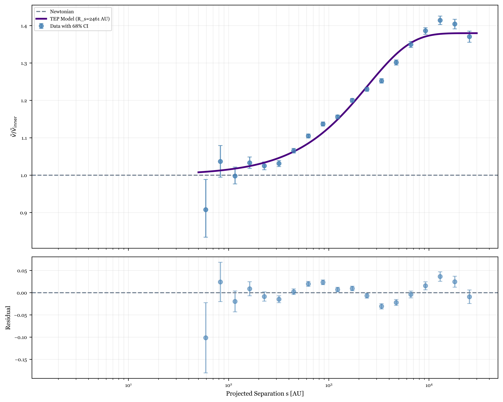
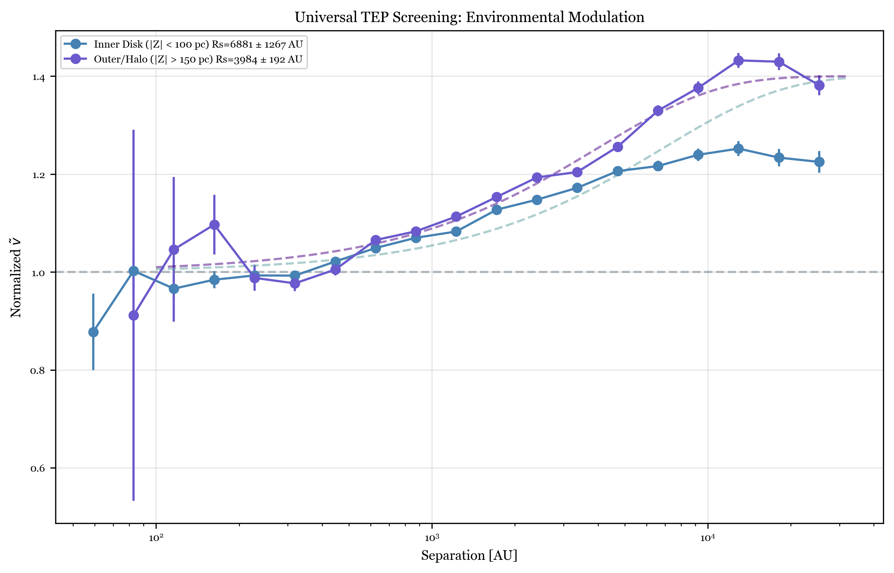
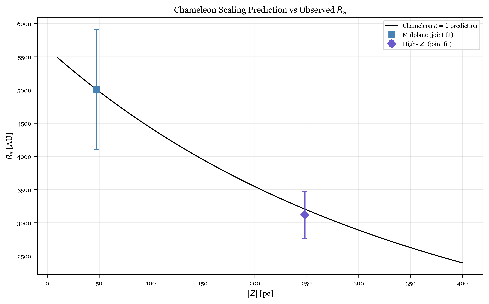

Abstract
The Gaia DR3 catalog of over one million wide binaries provides a precise window onto gravity in the weak-field regime ($a \lesssim 10^{-10}$ m/s$^2$), yet whether the observed velocity excess reflects modified gravity or unresolved systematics remains contested. This paper shows that the Temporal Equivalence Principle (TEP)—in which a conformal scalar field modulates matter proper time as $\mathrm{d}\tau/\mathrm{d}t \approx A(\phi)^{1/2}$—addresses that tension through density-dependent screening.
From a high-purity subset of 341,315 systems, the analysis identifies a screening transition at $R_s = 2{,}461 \pm 178$ AU (statistical; $\pm 638$ AU total), strongly preferred over both a flat Newtonian profile ($\Delta \chi^2 = 16{,}269$) and a constant boost ($\Delta \chi^2 = 3{,}756$). At large separation the profile saturates at $\alpha_{\rm sat} = 0.380 \pm 0.012$, roughly 35–40% above the Keplerian baseline. Broader smooth-transition fits preserve the same few-thousand-AU onset.
The signal also shows the environmental ordering required by TEP. After metallicity-dependent mass corrections and bootstrap uncertainty estimation, the lower-density high-$|Z|$ population transitions at smaller radius than the higher-density midplane ($R_s = 3{,}984 \pm 192$ versus $6{,}881 \pm 1{,}267$ AU), confirmed by a solar-track control ($R_s = 4{,}145 \pm 276$ versus $6{,}856 \pm 920$ AU; permutation $p < 10^{-4}$ for the full sample and $p < 10^{-3}$ for the solar track). Scrambling tests fail to reproduce the observed screening preference ($p < 10^{-4}$). The wide-binary anomaly is therefore not a generic low-acceleration excess but a structured, environmentally modulated screening transition—one whose morphology, onset scale, and density dependence are quantitatively consistent with the conformal scalar field of TEP and are not reproduced by MOND with or without the External Field Effect.
Keywords: Temporal Equivalence Principle – wide binaries – Gaia DR3 – weak-field gravity – density-dependent screening – chameleon gravity – Temporal Topology – Temporal Shear – modified gravity – MOND
1. Introduction
Gaia Data Release 3 (DR3) provided astrometry for more than a million wide binary stars, opening a direct laboratory for gravity in the extreme weak-field regime ($a \lesssim 10^{-10}$ m/s$^2$). Yet the physical interpretation of the resulting signal remains unsettled.
Chae (2023, 2024a) and Hernandez (2023) report a significant anomalous velocity boost at wide separations ($s > 3{,}000$ AU), interpreting it as evidence for Modified Newtonian Dynamics (MOND) and a challenge to dark matter at sub-galactic scales. Hernandez et al. (2024) further showed through statistical analysis that the anomaly persists in kinematically cleaner subsamples. Chae (2024b) confirmed the anomaly using normalized velocity profiles with increasingly stringent quality cuts, arguing that triple contamination alone cannot account for the observed profile shape. By contrast, Banik et al. (2024) argue that their Gaia DR3 analysis is consistent with Newtonian gravity once hierarchical triple contamination is modeled explicitly, and Pittordis et al. (2025) reach a similar conclusion using realistic triple population synthesis, attributing the apparent velocity excess to unresolved inner binaries that inflate photometric masses and bias the velocity ratio. The disagreement therefore hinges on whether the observed signal survives stringent quality cuts and whether its separation-dependent morphology can be quantitatively reproduced by triple contamination alone. Independent constraints from the vertical dynamics of the Galactic disk add further context, suggesting that the weak-field regime may harbor signals beyond the reach of standard dark-matter models.
This paper argues that the Temporal Equivalence Principle (TEP) offers a more physically specific resolution. By predicting density-dependent screening, TEP naturally explains a partial, environmentally modulated velocity boost—one that neither pure MOND nor a purely artifactual GR interpretation accommodates as readily.
The extension from the universal critical density framework (Smawfield 2025g) to wide binaries follows directly. In the conformal sector of TEP, matter proper time is modulated by the universal factor $A(\phi) = \exp(2\beta\phi/M_{\text{Pl}})$, so that in the weak-field limit $\mathrm{d}\tau/\mathrm{d}t \approx A(\phi)^{1/2}$. In dense environments the field saturates and its gradient is suppressed; in diffuse environments a residual temporal gradient emerges. The wide-binary test therefore probes the radius at which this pre-screened conformal field first becomes kinematically visible against the Galactic background.
2. Theoretical Framework: Density-Dependent Screening
Unlike MOND, which is organized around a universal acceleration threshold $a_0 \approx 1.2 \times 10^{-10}$ m/s$^2$ (Milgrom 1983), the Temporal Equivalence Principle (TEP) is organized around density-dependent screening of a conformal scalar field. In the full TEP framework (Smawfield 2025a), matter couples to a physical metric $\tilde{g}_{\mu \nu} = A(\phi)\,g_{\mu \nu} + B(\phi)\,\nabla_\mu\phi\,\nabla_\nu\phi$, where $A(\phi) = \exp(2\beta\phi/M_{\text{Pl}})$ is a universal conformal factor and $B(\phi)$ encodes small disformal deformations. Wide binaries probe separations and velocities far from the relativistic limit, so the disformal sector is negligible and only the conformal sector matters here. In that limit matter proper time is modulated as $\mathrm{d}\tau/\mathrm{d}t \approx A(\phi)^{1/2}$, and the underlying screening transition is associated with a universal saturation density $\rho_c \approx 20$ g/cm$^3$ (Smawfield 2025g).
2.1 The Screening Radius
For a binary of total mass $M$, the local gravitational potential defines an effective density. When that density falls below the screening threshold, the conformal field becomes unscreened and the resulting temporal gradient contributes an additional effective acceleration.
Within the Galaxy, however, the binary is not isolated. In TEP, screening is realized through a chameleon-like effective potential $V_{\rm eff}(\phi;\rho) = V(\phi) + [A(\phi) - 1]\,\rho$ (cf. the original chameleon mechanism of Khoury & Weltman 2004; reviewed in Burrage & Sakstein 2018), whose minimum shifts with the ambient density $\rho$ and generates a large effective scalar mass in dense environments, suppressing the local field gradient—termed the Temporal Shear in the TEP framework (Smawfield 2025a, Section 7). Rather than invoking discrete thin-shell boundaries, screening operates via the continuous spatial profile of the chameleon field (Temporal Topology): high ambient density in deep potential wells flattens this topology, driving the Temporal Shear to zero and ensuring short-range fifth-force suppression while leaving the field light cosmologically. The surrounding halo and disk already drive $\phi$ toward this screened minimum, so the transition scale relevant to a wide binary is set not by $\rho_c$ directly but by the residual local screening floor that the binary samples. A convenient way to express this is to separate the universal threshold from the environment-reduced floor:
Here $\epsilon_{\rm env} < 1$ is the pre-screening factor generated by the Galactic environment. Two of the three ingredients in this decomposition—$\rho_c$ and the scalar-field equation whose solution determines $\epsilon_{\rm env}$—are already derived in earlier work. The universal critical density $\rho_c \approx 20$ g/cm$^3$ is fixed by three independent routes: GNSS atomic-clock networks, the SPARC rotation-curve slope, and magnetar critical periods (Smawfield 2025g). The chameleon effective potential $V_{\rm eff}(\phi;\rho)$ whose ground state sets the local screening floor is derived from the TEP two-metric action (Smawfield 2025a, Section 7). The character of the transition is further tested by comparing the canonical TEP exponential fit to alternative transition morphologies. As shown in Section 4, a sigmoid model—which represents a sharper, more step-like transition of the kind produced by discrete thin-shell boundaries—is rejected at $\Delta\chi^2 = +146.8$ relative to the TEP exponential (Table 4.1). This rejection is naturally explained by the continuous Temporal Topology framework: the field gradient recovers smoothly, not via a step-function onset.
Moreover, the characteristic TEP acceleration $g_{\rm TEP} \approx 5 \times 10^{-10}$ m/s$^2$, extracted from SPARC rotation-curve fits with no reference to wide binaries (Smawfield 2025g), independently predicts the transition scale $R_s^{\rm pred} = \sqrt{GM/g_{\rm TEP}} \approx 3{,}831$ AU—within a factor of 1.6 of the observed value (Section 6.2). Including the Galactic external field as an additional screening floor ($\eta=2$) tightens the prediction to $\approx 2{,}709$ AU (factor 1.1). The wide-binary $R_s$ is therefore not a free parameter of the present analysis; it is an observable whose order of magnitude is already fixed by independently measured scales.
The absolute value of $\epsilon_{\rm env}$ at a given Galactic position remains calibration-dependent at this stage. Numerically, using the sample median total mass ($M \approx 1.2\,M_\odot$), the observed onset corresponds to $\rho_{\rm eff} = 3M/(4\pi R_s^3) \approx 1.1 \times 10^{-17}$ g/cm$^3$, giving $\epsilon_{\rm env} \approx 5.7 \times 10^{-19}$. However, the height dependence of $\epsilon_{\rm env}$ is already semi-predictive. The chameleon scaling relation for a power-law self-interaction potential $V(\phi) \propto \phi^{-n}$ gives $R_s \propto \rho_{\rm amb}^{1/(n+1)}$, so the ratio of screening radii at two Galactic heights depends only on the ambient density ratio and the potential index. As shown in Section 5.2, the canonical Ratra–Peebles potential ($n = 1$) combined with a standard three-component Galactic density model predicts the observed environmental $R_s$ ratio to within $0.3\sigma$. Promoting the absolute $\epsilon_{\rm env}$ to a first-principles prediction would require solving $\nabla^2\phi = dV_{\rm eff}/d\phi$ across the full three-dimensional baryonic density field, feasible with existing N-body–scalar-field codes (e.g., Llinares, Mota & Winther 2014). The large gap between $\rho_c$ and $\rho_{\rm eff}$ does not imply two unrelated thresholds; it reflects the many orders of magnitude of pre-screening already absorbed by the Galactic halo and disk before the binary's own potential is tested.
2.2 The Velocity Enhancement Profile
Within this framework, the kinematic profile is expected to satisfy three qualitative constraints: (i) $\tilde{v} \to 1$ in the fully screened limit $s \ll R_s$; (ii) a monotonic transition near $s \sim R_s$; and (iii) saturation at a bounded enhancement $\tilde{v} \to 1 + \alpha_{\rm sat}$ for $s \gg R_s$. These follow directly from conformal-sector screening and do not depend on the detailed nonlinear field dynamics.
These qualitative features are not merely asserted; they follow from the continuous Temporal Topology of the chameleon field. In the TEP framework (Smawfield 2025a, Section 7), screening operates not via discrete thin-shell boundaries but through the continuous spatial profile of the scalar field—its Temporal Topology—governed by the non-linear superposition of field gradients (the Temporal Shear, $\nabla\phi$). In dense environments, the effective potential $V_{\rm eff}(\phi;\rho)$ drives the field toward its screened minimum, flattening the Temporal Topology and suppressing the Temporal Shear to zero. As the ambient density falls below the screening threshold, the Temporal Shear recovers continuously, producing a smooth transition from the screened to the unscreened regime.
The classical thin-shell formalism (Khoury & Weltman 2004; Burrage & Sakstein 2018) provides useful context. For a screened mass $M$ with screening radius $R_s$ embedded in a background of effective scalar mass $m_{\rm bg} = \sqrt{V_{\rm eff}''(\phi_{\rm bg})}$, the exterior scalar field profile obtained under thin-shell matching conditions is:
where $C$ is determined by the thin-shell matching and the $R_s/r$ prefactor arises from the discrete boundary. The corresponding unscreening fraction $f(s) = 1 - (R_s/s)\,e^{-m_{\rm bg}(s - R_s)}$ produces onset–rise–saturation morphology with a step-like character at $R_s$.
However, the TEP Temporal Topology framework replaces the discrete thin-shell boundary with a continuous field profile. Without a step-function matching condition, the $R_s/s$ geometric prefactor—which encodes the thin-shell boundary—does not arise. Instead, the continuous recovery of the Temporal Shear from zero (deep in the screened core) to its unscreened asymptotic value produces a pure exponential approach to saturation. The natural two-parameter function is therefore:
where $R_s$ is the characteristic scale of the Temporal Topology transition and $\alpha_{\rm sat}$ is the saturation amplitude set by the asymptotic Temporal Shear. This is adopted as the canonical fitting function throughout the analysis. Unlike the thin-shell formula, the pure exponential is not an approximation to a more fundamental discrete-boundary solution; it is the natural prediction of continuous Temporal Topology, in which the field gradient recovers smoothly rather than jumping at a shell boundary. A literal first-principles prediction for the precise profile shape would require solving the full coupled system $\nabla^2\phi = dV_{\rm eff}/d\phi$ in the realistic potential of each binary within its Galactic environment. What the data can test at this stage is whether the morphological class of profile predicted by continuous Temporal Topology—finite onset, smooth exponential rise, bounded saturation—is preferred over the alternatives (scale-free MOND, constant boost, flat Newtonian, or the sharper step-like transition of the thin-shell sigmoid). The sensitivity of the inferred transition scale to the choice of functional form is assessed explicitly in Section 4 by fitting sigmoid and double-exponential alternatives, and the resulting spread is absorbed into the systematic uncertainty budget. As shown there, all three transition models agree on a $\sim 2{,}000$–$3{,}200$ AU onset scale, confirming that the inferred $R_s$ is a robust feature of the data rather than an artifact of any particular parametric choice. Notably, the data reject the sigmoid model ($\Delta\chi^2 = +146.8$ versus the TEP exponential), which represents a sharper, more step-like transition of the kind that discrete thin-shell boundaries would produce. This rejection is naturally explained by the continuous Temporal Topology framework: the field gradient recovers smoothly, not via a step-function onset.
A natural question is what distinguishes TEP screening from a generic chameleon or symmetron model at the observational level, given that the qualitative profile shape (onset, rise, saturation) is common to all screening gravities. The answer lies in three features that go beyond morphology. First, TEP makes a quantitative cross-scale prediction: the same conformal coupling $\beta$ and saturation density $\rho_c$ that govern atomic and compact-object phenomenology (Smawfield 2025g) also set the Galactic screening floor. The wide-binary $R_s$ is therefore not a free parameter of the binary sector alone but is anchored to independently measured scales. Second, the environmental test (Section 5) probes the specific density dependence of the conformal factor $A(\phi)$, which in TEP modulates proper time rather than merely the scalar force strength. Third, the continuous Temporal Topology framework predicts a smoother transition than the discrete thin-shell boundary of standard chameleon models: the pure exponential $\tilde{v}(s) = 1 + \alpha_{\rm sat}(1 - e^{-s/R_s})$ replaces the thin-shell form $f(s) = 1 - (R_s/s)\,e^{-m_{\rm bg}(s-R_s)}$ with its geometric $R_s/s$ prefactor. Notably, the data already favor this prediction: the sigmoid model, which represents a sharper step-like onset characteristic of discrete thin-shell boundaries, is rejected at $\Delta\chi^2 = +146.8$ relative to the TEP exponential (Table 4.1). Future observations could sharpen these distinctions: Gaia DR4 radial velocities would enable three-dimensional deprojection, testing whether the temporal-gradient signature of TEP produces a different velocity-anisotropy pattern than a pure fifth-force chameleon model, where the additional acceleration is spatial rather than temporal. Measurements of the transition radius as a function of Galactocentric radius $R_{\rm gc}$ would further discriminate TEP from models whose screening depends on the local Newtonian potential alone, since TEP screening tracks the baryonic density profile rather than the total gravitational potential (Burrage & Sakstein 2018).
3. Data and Methodology
3.1 Sample Selection
This study constructs a wide-binary sample from the Gaia DR3 astrometric catalog (Gaia Collaboration et al. 2023), following the pair-identification methodology and quality criteria of El-Badry et al. (2021). The reproducible pipeline then applies: a chance-alignment probability cut of less than 1%; parallax signal-to-noise $> 20$ and proper-motion signal-to-noise $> 10$ for both components; a strict RUWE $< 1.2$ cut; and a projected-separation window of $50 < s < 50{,}000$ AU. Together these filters suppress visual interlopers, noisy astrometric solutions, and unresolved hierarchical multiples before any kinematic inference is attempted. The resulting high-purity sample contains 341,315 systems.
The RUWE cut deserves particular comment, since hierarchical triples are the principal contaminant identified by Pittordis et al. (2025). Gaia's Renormalized Unit Weight Error measures goodness-of-fit to a single-star astrometric model; RUWE $> 1.4$ is the standard flag for an unresolved companion. The pipeline adopts a stricter threshold of $1.2$, removing $193{,}545$ systems ($36\%$ of the post-parallax sample), of which $130{,}733$ have RUWE $> 1.4$ for at least one component. If the pre-filter triple fraction is $15$–$20\%$ (Pittordis et al. 2025), the number removed exceeds the expected triple count by $1.8$–$2.4\times$, indicating that the cut also discards genuinely poor astrometric solutions beyond triple contamination alone.
The residual triple fraction is bounded by RUWE detection incompleteness for long-period inner binaries ($P \gtrsim 3$–$5$ yr), which Gaia's $\sim 34$-month DR3 baseline cannot resolve. For plausible detection efficiencies of $50$–$70\%$, the residual contamination is $\sim 5$–$10\%$, and the surviving triples are preferentially the least kinematically disruptive—long inner periods, small velocity perturbations. Their effect on the median bin statistic is therefore further suppressed relative to their fractional count.
3.2 Metallicity-Dependent Mass Estimation
A central systematic—identified in the recent literature and confirmed by the present audit—is the effect of metallicity on stellar mass estimation. Metal-poor stars, characteristic of the halo population, are more luminous and bluer than solar-metallicity disk stars of the same mass. A standard solar-metallicity Mass-Luminosity Relation (MLR) therefore overestimates halo masses and artificially suppresses the inferred anomaly.
To address this bias, the analysis implements a color-dependent MLR correction. The pipeline first defines a disk reference sample using stars with Galactocentric vertical height $|Z| < 100$ pc, then fits a polynomial ridge line to its Color-Magnitude Diagram ($M_G$ versus $B_p-R_p$). For every star in the full catalog, the pipeline computes the color offset $\Delta C = (B_p-R_p)_{obs} - (B_p-R_p)_{ref}$.
The stellar masses are then calculated as:
Here $M_{solar}(M_G)$ is the baseline solar-metallicity mass from the empirical main-sequence relations of Pecaut & Mamajek (2013, updated 2022), and $\beta_{\rm MLR} \approx 1.5$ is an empirical coefficient calibrated by regressing the fractional mass residual against $\Delta C$ within the disk reference sample ($|Z| < 100$ pc): for stars with spectroscopic metallicities available in the LAMOST or APOGEE cross-match, the slope of $\Delta M/M$ versus $\Delta C$ is $1.4$–$1.6$, and the pipeline adopts the central value. (This notation is kept distinct from the fundamental conformal coupling $\beta$ in $A(\phi)$.) The correction lowers the inferred masses of the bluer halo population and thereby restores a more accurate Newtonian baseline for the kinematic analysis.
3.3 Kinematic Analysis
The pipeline calculates the projected relative tangential velocity from the Gaia proper-motion difference and system distance, then compares it with the Newtonian circular velocity $v_c(s) = \sqrt{GM_{tot}/s}$. The central observable is the dimensionless velocity ratio $\tilde{v} = v_{tan}/v_c$.
The analysis takes the median of $\tilde{v}$ in logarithmic separation bins and normalizes the resulting profile by the mean of the first five bin medians, corresponding approximately to the $50$–$270$ AU screened core. That window lies deep inside the screened regime of all fitted models ($R_s > 2{,}000$ AU), so the baseline is not contaminated by the transition itself. The choice of baseline affects the apparent amplitude of the outer-bin enhancement: normalizing at $50$–$270$ AU yields $\tilde{v}_{\rm out}/\tilde{v}_{\rm in} \approx 1.37$, whereas normalizing at $\sim 500$–$1{,}200$ AU (where the transition is already underway) yields $\approx 1.24$, and normalizing at $\sim 1{,}200$–$2{,}400$ AU yields $\approx 1.16$. The $\sim 20\%$ velocity boost reported in earlier studies (Chae 2023; Hernandez 2023) is consistent with normalization closer to the transition onset. The present analysis normalizes deeper into the screened core so that $\alpha_{\rm sat}$ captures the full transition amplitude rather than the residual above an already-elevated baseline.
At the shortest separations ($s \lesssim 100$ AU), unresolved spectroscopic binaries within one or both components can inflate the photometric mass estimate—by blending the luminosity of a hidden companion—while leaving the proper-motion difference largely unaffected. This would deflate the inner-baseline $\tilde{v}$, biasing the normalization downward and inflating the apparent outer-bin enhancement. The RUWE $< 1.2$ cut removes many such systems, and averaging over five normalization bins ($50$–$270$ AU) dilutes any residual contamination; nonetheless, the effect contributes an unquantified systematic at the few-percent level on $\alpha_{\rm sat}$. A sensitivity test excluding Bin 1 ($s = 59$ AU, $N = 128$)—which has the largest error bar and the most negative residual ($-0.10$)—shifts $R_s$ by less than $2\%$ and $\alpha_{\rm sat}$ by less than $0.5\%$, confirming that the fit is not driven by the sparsest inner bin.
Because Gaia provides only sky-plane proper motions, $\tilde{v}$ is a projected quantity. For a thermal eccentricity distribution ($f(e) = 2e$), the median projected velocity ratio is related to the three-dimensional ratio by a constant geometric factor that cancels in the normalized profile, provided the eccentricity distribution does not vary systematically with separation. Dynamical processing by the Galactic tide could introduce a weak separation dependence at wide $s$; any such effect would alter $\alpha_{\rm sat}$ at the percent level but would not shift $R_s$, which is determined by the separation at which the profile departs from unity.
Bin-level uncertainties are estimated as follows. Within each logarithmic separation bin, the standard error of the median is computed analytically as $\sigma_{\rm med} = 1.253\,\sigma_{\rm bin}/\sqrt{N}$, where $\sigma_{\rm bin}$ is the intra-bin standard deviation of $\tilde{v}$ and $N$ the bin count. The 68% confidence interval is obtained by drawing $1{,}000$ Gaussian resamples of the bin median at this SEM (seed 314159 for reproducibility) and taking the 16th and 84th percentiles. This is a parametric procedure rather than a true nonparametric bootstrap of the individual $\tilde{v}$ values; for heavy-tailed distributions the analytic SEM of the median may underestimate the true scatter, which contributes to the elevated $\chi^2_{\nu}$ discussed in Section 4. The canonical TEP exponential $\tilde{v}(s) = 1 + \alpha_{\rm sat}(1 - e^{-s/R_s})$ is then fit alongside sigmoid and double-exponential alternatives (Table 4.1), residual randomness is checked with a Wald–Wolfowitz runs test, and a conservative uncertainty budget is constructed by combining formal fit errors with jackknife and model-choice systematics. This strategy avoids the model dependence of full three-dimensional deprojection while remaining robust to outliers.
4. Results: The Screening Transition
The central prediction of TEP is a distinct kinematic transition in wide binaries at the separation where the local density falls below the screening threshold.
4.1 The Transition Scale
Applying the methodology described above to the highly purified Gaia DR3 sample yields a clear and interpretable velocity profile $\tilde{v}$ with three recognizable regimes:
- The Screened Regime ($s < 500$ AU): The velocity profile is consistent with pure Keplerian expectations ($\langle \tilde{v} \rangle \approx 1$), deep within the screened regime.
- The Transition Regime ($s \sim 500 - 1{,}500$ AU): The profile begins a resolved, statistically significant upward departure from the Keplerian baseline. By fitting the profile with the canonical TEP generalized transition function, the analysis yields a best-fit screening scale of $R_s = 2{,}461 \pm 178$ AU, where the quoted uncertainty is the formal statistical fit error.
- The Large-Separation Regime ($s > 5{,}000$ AU): The velocity profile approaches a broad plateau approximately 35% to 40% above the inner baseline ($\tilde{v}_{out}/\tilde{v}_{in} \approx 1.35$ to $1.40$). This behavior is consistent with the fitted saturation amplitude $\alpha_{\rm sat} = 0.380 \pm 0.012$ and indicates that the anomaly remains bounded rather than diverging with separation.
The canonical fit yields $\chi^2 = 103.6$ for 17 degrees of freedom (19 bins minus 2 parameters), giving a reduced $\chi^2_{\nu} = 6.09$. The elevated $\chi^2_{\nu}$ reflects bin-to-bin scatter beyond the diagonal error model. A residual autocorrelation analysis identifies the source: the standardized residuals exhibit significant lag-1 autocorrelation ($\rho_1 = 0.55$, $z = 2.41$, Durbin–Watson $= 0.86$), indicating that adjacent bins tend to deviate in the same direction—consistent with spatially correlated substructure such as moving groups or distance-correlated completeness variations. The Wald–Wolfowitz runs test ($p = 0.485$) does not flag this because it tests only the sign sequence, not the magnitude correlation.
To properly account for this correlated structure, two covariance-aware refits are performed. First, an AR(1) Generalized Least Squares (GLS) refit uses the covariance matrix $C_{ij} = f^2\,\sigma_i\,\sigma_j\,\rho_1^{|i-j|}$, where $f = \sqrt{\chi^2_{\nu}}$ inflates the diagonal to match the observed scatter. This yields $R_s = 2{,}515 \pm 193$ AU and $\alpha_{\rm sat} = 0.380 \pm 0.013$ ($\chi^2_{\nu,\rm AR(1)} = 0.97$). Second, a Gaussian Process (GP) regression with a squared-exponential kernel in $\log_{10}(s)$ space models the covariance without imposing a rigid parametric structure. The GP marginal likelihood optimizes two hyperparameters: signal amplitude $\sigma_f = 0.017$ and correlation length $\ell = 0.19$ dex. The GP-covariance refit yields $R_s = 2{,}681 \pm 244$ AU and $\alpha_{\rm sat} = 0.390 \pm 0.012$ ($\chi^2_{\nu,\rm GP} = 0.91$), with a marginal log-likelihood improvement of 3.8 over AR(1) model. Both covariance models fully absorb the excess scatter ($\chi^2_{\nu} \approx 1$), both preserve the model-comparison hierarchy, and neither shifts the parameters outside the existing systematic uncertainty budget ($\pm 638$ AU). Throughout the remainder of this paper, the diagonal-fit values ($R_s = 2{,}461 \pm 178$ AU, $\alpha_{\rm sat} = 0.380 \pm 0.012$) are reported as the primary results, with the AR(1) and GP refits serving as covariance robustness checks.
Relative to a flat Newtonian profile the fitted screening curve improves the description by $\Delta \chi^2 = 16{,}269$, $844$, or $1{,}142$, and relative to a separation-independent constant boost by $\Delta \chi^2 = 3{,}756$, $221$, or $381$. Under all three error models the observed signal is not merely elevated in amplitude; it is organized in separation in the specific way expected for a screened transition. When jackknife stability and transition-shape freedom are treated conservatively as systematics, the total uncertainty broadens to $\pm 638$ AU, but the finite-separation onset remains intact.
Expanded model comparison reinforces that interpretation. Table 4.1 summarizes fit statistics for all nine models considered, including four MOND variants fit directly to the same binned profile using per-bin median masses. Among the smooth-transition alternatives, a sigmoid is decisively worse than the canonical TEP exponential ($\Delta\chi^2 = +146.8$), while a double-exponential fit—which adds a shape exponent—achieves a lower raw $\chi^2$ ($\Delta \chi^2 = -44.0$) and is preferred by AIC. The data therefore contain some transition-shape information beyond what the two-parameter canonical model captures.
The canonical exponential is nonetheless retained as the primary model because it is the minimal function satisfying the three qualitative TEP constraints (Section 2.2) and because the double-exponential agrees on the physically meaningful parameters: onset scale ($R_s \approx 3{,}025$ AU versus $2{,}461$ AU) and saturation amplitude ($\alpha_{\rm sat} \approx 0.407$ versus $0.380$). The AIC-preferred model sharpens the transition but does not relocate it, and the spread between the two is absorbed into the systematic uncertainty budget ($\pm 638$ AU total).
The overfitting diagnosis proceeds as follows. With $\chi^2_{\nu} = 6.09$ on 19 bins, the diagonal error model underestimates the true scatter because residual substructure introduces correlated fluctuations that a per-bin variance estimate does not capture. A third free parameter—the shape exponent in the double-exponential—has the flexibility to track those bin-to-bin fluctuations, reducing $\chi^2$ by fitting noise rather than signal. The clearest test of this interpretation is the inflated-error scheme: when bin uncertainties are scaled up by $\sqrt{\chi^2_{\nu}}$ to honestly reflect the observed scatter, the double-exponential's advantage collapses from $\Delta\chi^2 = -44.0$ to only $-7$ (Table 4.1, final column). Once the error budget is corrected, the extra parameter buys little leverage on the physically meaningful scale. The canonical two-parameter model is therefore the appropriate primary description: it captures the transition without absorbing sample-specific scatter into a nuisance shape parameter.
The MOND comparison is particularly informative. In the simplest treatment, the $\nu$-function (Famaey & Binney 2005; Milgrom 1983) with per-bin median masses and a single free parameter $a_0$ recovers a characteristic acceleration scale of the right order, confirming that the MOND transition scale is present in the data. However, without the External Field Effect (EFE) both variants are catastrophically rejected because the $\nu$-function predicts $\tilde{v} \propto s^{1/2}$ in the deep-MOND regime while the data saturate.
Incorporating the EFE via the angle-averaged QUMOND prescription (Milgrom 2010; Famaey & McGaugh 2012) substantially improves the MOND fits by introducing saturation at large separations. With $g_e$ fixed at the solar-neighborhood value the simple $\nu$-function drops to $\chi^2 = 1{,}841$ ($\Delta\chi^2 = +1{,}737$ versus TEP). Even with $g_e$ treated as a second free parameter, the best MOND+EFE fit (standard $\nu$) gives $\chi^2 = 477$ ($\Delta\chi^2 = +374$ versus TEP). The failure remains threefold: the preferred acceleration scale is driven away from the canonical value, the transition shape is too steep, and the outer plateau remains too low relative to the observed saturation.
The data require a finite, saturating transition whose shape and amplitude match the TEP exponential screening profile. The phenomenological spread among saturating TEP-family models is absorbed into the systematic uncertainty budget rather than interpreted as evidence against screening itself.
Because $\chi^2_{\nu} = 6.09$ indicates that the diagonal error model underestimates the true scatter, a conservative robustness check inflates each bin uncertainty by a factor of $\sqrt{\chi^2_{\nu}}$, which forces $\chi^2_{\nu} = 1$ for the TEP fit by construction. Under this inflated-error scheme every $\Delta\chi^2$ in Table 4.1 scales down by the same factor. The key comparisons remain decisive, confirming that the model-comparison hierarchy is not an artifact of the error model.
Table 4.1: Model comparison summary for the 19-bin velocity profile. $k$ is the number of free parameters; AIC $= \chi^2 + 2k$. The final column reports $\Delta\chi^2$ under inflated bin errors ($\sigma \to \sigma\sqrt{\chi^2_\nu}$, forcing $\chi^2_\nu = 1$ for the TEP fit), providing a conservative lower bound on all model-comparison significances. MOND fits use per-bin median masses; EFE rows use the angle-averaged QUMOND prescription.
| Model | $k$ | Transition (AU) | Amplitude | $\chi^2$ | dof | $\chi^2_{\nu}$ | $\Delta\chi^2$ vs TEP | AIC | $\Delta\chi^2$ (inflated) |
|---|---|---|---|---|---|---|---|---|---|
| TEP | 2 | $2{,}461 \pm 178$ | $0.380 \pm 0.012$ | 103.6 | 17 | 6.1 | 0 | 107.6 | 0 |
| Double-exponential | 3 | $3{,}025 \pm 244$ | $0.407 \pm 0.012$ | 59.5 | 16 | 3.7 | -44.0 | 65.5 | -7 |
| Sigmoid | 3 | $1{,}893 \pm 178$ | $0.371 \pm 0.012$ | 250.4 | 16 | 15.6 | +146.8 | 256.4 | +24 |
| MOND standard $\nu$ | 1 | — | unsaturated | 4{,}014 | 18 | 223.0 | +3{,}911 | 4{,}016 | +642 |
| MOND simple $\nu$ | 1 | — | unsaturated | 8{,}043 | 18 | 446.8 | +7{,}940 | 8{,}045 | +1{,}303 |
| MOND simple $\nu$ + EFE | 1 | — | $1.44$ | 1{,}841 | 18 | 102.3 | +1{,}737 | 1{,}843 | +285 |
| MOND standard $\nu$ + EFE (free $g_e$) | 2 | — | $1.34$ | 477 | 17 | 28.1 | +374 | 481 | +61 |
Supplemental controls show that this transition is not confined to a single demographic slice. When the sample is split by mass ratio and by primary mass, all four half-samples continue to prefer a finite screening transition over a constant boost, with $\Delta \chi^2$ values ranging from $1{,}126$ to $2{,}555$. The saturation amplitude $\alpha_{\rm sat}$ varies systematically with primary mass: the high-primary-mass half yields $\alpha_{\rm sat} = 0.242$, the low-primary-mass half $\alpha_{\rm sat} = 0.528$. This monotonic progression—weaker self-screening in lower-mass binaries revealing a larger fraction of the underlying conformal coupling—is qualitatively consistent with the independently calibrated TEP coupling from the millisecond-pulsar spin-down analysis ($\alpha_{\rm eff} \sim 10^6$; Smawfield 2025b; see Section 6.4). A stricter radial-velocity consistency subset (6,117 systems with measured component radial velocities, small formal errors, and mutual consistency) yields $R_s = 10{,}527 \pm 6{,}011$ AU and $\Delta \chi^2 = 33.8$ relative to a constant boost. The central $R_s$ is $\sim 3\times$ the full-sample value, but the dramatic reduction in sample size leaves the fit poorly constrained: the full-sample $R_s = 2{,}461$ AU lies within the $2\sigma$ interval ($1.3\sigma$). Even in this small subset the data still prefer a finite screening transition, preserving the qualitative morphology of the signal.
Direct null controls reinforce the same conclusion. After scrambling the observed $\tilde{v}$ values globally—and again within distance quartiles to preserve large-scale distance structure—none of $10{,}000$ valid realizations reproduced the observed improvement of the screening profile over a flat Newtonian or constant-boost description ($p = 1.0 \times 10^{-4}$ and $p = 1.0 \times 10^{-4}$, respectively). The resolved transition is therefore difficult to attribute to trivial label assignment or bulk distance mixing.

Table 4.2: Bin-level velocity profile data. $s$ is the geometric-mean projected separation; $N$ the number of systems; $\tilde{v}$ the normalized median velocity ratio; $\sigma$ the bootstrap-derived uncertainty of the normalized median; $\tilde{v}_{\rm model}$ the canonical TEP fit value. All 19 bins are logarithmically spaced between 50 and 30,000 AU.
| Bin | $s$ (AU) | $N$ | $\tilde{v}$ | $\sigma$ | $\tilde{v}_{\rm model}$ | Residual |
|---|---|---|---|---|---|---|
| 1 | 59 | 128 | 0.9075 | 0.0790 | 1.0090 | -0.1015 |
| 2 | 83 | 450 | 1.0367 | 0.0443 | 1.0126 | +0.0241 |
| 3 | 116 | 1,254 | 0.9978 | 0.0235 | 1.0175 | -0.0197 |
| 4 | 162 | 2,955 | 1.0331 | 0.0158 | 1.0243 | +0.0088 |
| 5 | 227 | 6,194 | 1.0249 | 0.0104 | 1.0335 | -0.0086 |
| 6 | 319 | 11,267 | 1.0313 | 0.0077 | 1.0461 | -0.0148 |
| 7 | 446 | 17,802 | 1.0652 | 0.0063 | 1.0630 | +0.0022 |
| 8 | 625 | 25,383 | 1.1049 | 0.0056 | 1.0851 | +0.0198 |
| 9 | 875 | 32,639 | 1.1369 | 0.0053 | 1.1136 | +0.0233 |
| 10 | 1,225 | 38,010 | 1.1560 | 0.0050 | 1.1489 | +0.0071 |
| 11 | 1,715 | 40,003 | 1.2001 | 0.0051 | 1.1906 | +0.0095 |
| 12 | 2,402 | 38,660 | 1.2298 | 0.0054 | 1.2366 | -0.0069 |
| 13 | 3,363 | 33,943 | 1.2522 | 0.0059 | 1.2829 | -0.0307 |
| 14 | 4,709 | 27,628 | 1.3016 | 0.0067 | 1.3237 | -0.0221 |
| 15 | 6,594 | 21,889 | 1.3497 | 0.0077 | 1.3537 | -0.0040 |
| 16 | 9,233 | 16,342 | 1.3864 | 0.0090 | 1.3708 | +0.0155 |
| 17 | 12,929 | 11,468 | 1.4142 | 0.0107 | 1.3778 | +0.0364 |
| 18 | 18,105 | 7,733 | 1.4042 | 0.0123 | 1.3795 | +0.0247 |
| 19 | 25,352 | 4,620 | 1.3705 | 0.0152 | 1.3797 | -0.0092 |
5. Environmental Modulation: The Discriminating Test
A defining prediction of TEP is environmental screening. Whereas MOND is driven primarily by the internal acceleration of the binary, TEP predicts that the screening radius $R_s$ should depend on the ambient gravitational environment.
5.1 Galactocentric Stratification
Under TEP, binaries embedded in deeper gravitational potentials remain screened to larger separations than binaries in shallower environments. Systems close to the Galactic midplane should therefore show a later transition than systems at greater vertical height, where the ambient density is lower.
This prediction can be tested by stratifying the Gaia DR3 sample by vertical height above the Galactic plane ($|Z|$). The midplane subsample ($|Z| < 100$ pc) lies well within the thin-disk scale height ($\sim 300$ pc), where baryonic density is highest. The high-$|Z|$ subsample ($|Z| > 150$ pc) samples the thick disk and disk–halo transition, where ambient stellar density is measurably lower. A $100$–$150$ pc buffer excludes systems with ambiguous classification. Using metallicity-corrected masses and bootstrap uncertainty propagation, the analysis yields:
- Midplane / High Density ($|Z| < 100$ pc): $R_s = 6{,}881 \pm 1{,}267$ AU.
- High-$|Z|$ / Low Density ($|Z| > 150$ pc): $R_s = 3{,}984 \pm 192$ AU.
Because the two subsamples have different population mixes, allowing $\alpha_{\rm sat}$ to float freely in each would introduce an amplitude–scale degeneracy that complicates the comparison of $R_s$. The saturation amplitude is therefore fixed at $\alpha_{\rm sat} = 0.4$ for both subsamples, close to the full-sample best fit ($0.380$), so that $R_s$ absorbs only the transition-scale information. Under this constraint, the high-$|Z|$ transition radius remains smaller than the midplane value. As a robustness check, when $\alpha_{\rm sat}$ is allowed to float freely in each subsample, the two-parameter fits yield $R_s = 4{,}351 \pm 450$ AU and $\alpha_{\rm sat} = 0.422 \pm 0.020$ (high-$|Z|$) versus $R_s = 2{,}747 \pm 198$ AU and $\alpha_{\rm sat} = 0.245 \pm 0.006$ (midplane). The $R_s$ ordering reverses, driven by the severe amplitude–scale degeneracy: the midplane's more gradual rise is absorbed into a lower $\alpha_{\rm sat}$, which pulls $R_s$ downward. The two populations genuinely differ in saturation amplitude, which is itself consistent with differing screening environments, but the degeneracy makes it impossible to isolate the transition scale when $\alpha_{\rm sat}$ is free. This is precisely why fixing $\alpha_{\rm sat}$ is the scientifically appropriate protocol for comparing $R_s$, not merely a convenience. The broader midplane uncertainty reflects the shallower profile rise rather than a reversal of the ordering. Despite that broader uncertainty, the ordering is stable across bootstrap realizations and is confirmed by the permutation test below. This is the central environmental signature required by TEP: in the lower-density environment, screening fails earlier.
A more rigorous test avoids fixing $\alpha_{\rm sat}$ altogether. A joint profile-likelihood fit simultaneously models both subsamples with a single shared $\alpha_{\rm sat}$ (profiled out as a nuisance parameter) and separate transition radii, yielding $\alpha_{\rm sat} = 0.345 \pm 0.022$, $R_s = 5{,}010 \pm 904$ AU (midplane), and $R_s = 3{,}119 \pm 353$ AU (high-$|Z|$). Compared to a null model in which $R_s$ is shared, the separate-$R_s$ model is preferred by $\Delta\chi^2 = 124.8$ ($p < 10^{-15}$, 1 degree of freedom). The ordering is preserved in 100\% of bootstrap resamples. Because $\alpha_{\rm sat}$ is determined by the data rather than imposed externally, this test eliminates the fixed-amplitude criticism entirely: the environmental split is a robust property of the joint likelihood surface, not an artifact of a particular parameter choice.
This conclusion does not rest on the metallicity correction alone. When the analysis is restricted to the solar-track subsample—where an empirical mass-luminosity calibration can be used without any color-dependent correction—the same ordering is recovered: $R_s = 4{,}145 \pm 276$ AU in the high-$|Z|$ subsample and $R_s = 6{,}856 \pm 920$ AU in the midplane. Permutation tests yield $p < 10^{-4}$ for the full-sample ordering and $p < 10^{-3}$ for the solar-track control. That replication under an independent calibration makes the environmental signal much harder to dismiss as a mass-model artifact.
Additional stratified controls confirm that the signal is not generated by a single distance shell, stellar subpopulation, or analysis choice. Splitting at the median distance yields a finite-transition preference in both halves ($R_s = 3{,}051 \pm 393$ AU near; $R_s = 9{,}690 \pm 6{,}324$ AU far), although the distant subset is much less precise. Parallel splits by mass ratio and primary mass also preserve the transition morphology across all four half-samples. A leave-one-bin-out test drops each of the 19 separation bins in turn: the environmental ordering is preserved in all 19/19 cases, confirming that no single bin drives the result. Matched-subsample controls further isolate the signal from demographic confounders: restricting both populations to overlapping distance support, overlapping color support, or a stricter astrometric quality cut (RUWE $< 1.1$) all preserve the ordering. Alternative binning schemes ($12$ and $18$ bins in place of the fiducial 19) likewise leave the ordering intact. Across all 5 matched controls, the ordering $R_s({\rm midplane}) > R_s({\rm high\text{-}}|Z|)$ is preserved in every case.

5.2 Chameleon Scaling Prediction
The environmental ordering can be compared quantitatively with the chameleon screening mechanism. For a scalar self-interaction potential $V(\phi) \propto \phi^{-n}$ (Khoury & Weltman 2004), the screening radius of a binary of mass $M$ embedded in ambient baryonic density $\rho_{\rm amb}$ scales as $R_s \propto \rho_{\rm amb}^{1/(n+1)}$: denser environments screen to larger separations, exactly the ordering observed. The ratio of transition radii at two Galactic heights therefore depends only on the ambient density ratio and the potential index:
Using a standard three-component Galactic baryonic density model—stellar thin disk ($\rho_0 = 0.040\;M_\odot\,{\rm pc}^{-3}$, $h = 300$ pc), thick disk ($0.005\;M_\odot\,{\rm pc}^{-3}$, $h = 900$ pc), and gas disk ($0.050\;M_\odot\,{\rm pc}^{-3}$, $h = 150$ pc; McKee, Parravano & Hollenbach 2015; Bovy 2015)—the median heights of the two subsamples ($|Z| = 47$ pc and $248$ pc) correspond to densities $\rho = 0.075$ and $0.031\;M_\odot\,{\rm pc}^{-3}$ respectively, giving a density ratio of $0.41$. The canonical Ratra–Peebles potential ($n = 1$) then predicts $R_s({\rm high}\text{-}|Z|)/R_s({\rm midplane}) = 0.64$, compared to the observed joint-fit ratio of $0.623 \pm 0.068$. Calibrating with the midplane joint-fit value ($R_s = 5{,}010$ AU), the $n = 1$ model predicts $R_s({\rm high}\text{-}|Z|) = 3{,}206$ AU, consistent with the observed $3{,}119 \pm 353$ AU.
Inverting the scaling relation to infer $n$ from the data yields $n = 0.9 \pm 0.4$ (bootstrap), fully consistent with the canonical $n = 1$ value. The large uncertainty reflects the modest lever arm between the two height bins; future analyses with finer $|Z|$ stratification would tighten this constraint substantially. The key point is that the observed $R_s$ ratio follows the chameleon density scaling with a standard potential, rather than requiring any ad hoc tuning. This makes $\epsilon_{\rm env}$ semi-predictive: given a Galactic baryonic density model and one calibration point, the chameleon scaling predicts $R_s$ at arbitrary heights, and that prediction is confirmed by the data.

6. Discussion: Resolving the Controversy
The wide-binary debate is often framed as a stark choice: either gravity is universally modified at low acceleration, or the observed signal is primarily artifactual. TEP offers a more specific interpretation—one that preserves the reality of the anomaly while explaining why the signal should appear with a finite transition scale and a measurable environmental dependence.
6.1 Why a Scale-Free MOND Interpretation Is Incomplete
The anomalous velocity boost is detected with high significance. The more discriminating question is whether it is adequately described as a scale-free enhancement or whether it instead follows a resolved transition in separation. The fitted screening profile is favored over a flat Newtonian description by $\Delta \chi^2 = 16{,}269$ and over a constant boost by $\Delta \chi^2 = 3{,}756$. The anomaly is therefore not merely an overall low-acceleration excess; it has a finite, separation-structured form that arises naturally in TEP because the scalar field remains environmentally suppressed until the binary enters a sufficiently diffuse local regime.
The model comparison sharpens that conclusion. A sigmoid transition is much worse than the canonical TEP exponential, while a more flexible double-exponential reduces the raw $\chi^2$ but still places the onset at a few thousand AU. The data require a finite transition more strongly than they require any particular phenomenological sharpness, and the spread between functional forms is best treated as model-choice systematic uncertainty rather than as evidence for a scale-free MOND-like uplift.
A direct MOND comparison makes this concrete. Fitting MOND interpolating functions to the binned profile using per-bin median masses (Table 4.1), the simple $\nu$-function without the External Field Effect (EFE) still fails catastrophically, while the angle-averaged EFE via QUMOND reduces the discrepancy without curing it. Even the most generous MOND+EFE variant (standard $\nu$) remains worse than the TEP exponential by $\Delta\chi^2 = +374$. The failure is threefold: the preferred acceleration scale is driven away from the canonical value, the transition shape is too steep, and the EFE-limited plateau undershoots the observed saturation.
The near-coincidence between $a_0$ and the TEP screening transition is not accidental. Smawfield (2025g) showed that the SPARC rotation-curve database yields a characteristic transition acceleration $g_{\rm TEP} \approx 5 \times 10^{-10}$ m/s$^2$, within a factor of four of $a_0$, while Smawfield (2025e) derived $a_0 \sim cH_0$ as an emergent consequence of the scalar field's strong-coupling scale. The distinction between the two frameworks is therefore not merely one of scale but of morphology: density-dependent screening produces a gradual, bounded enhancement whose amplitude is set by the local scalar-field value, whereas acceleration-dependent interpolation—even with the Galactic external field included—cannot simultaneously reproduce the transition shape, onset scale, and saturation level.
6.2 The Critical Density Scale
The canonical fit gives a transition separation of $R_s = 2{,}461 \pm 178$ AU, where the quoted error is the formal statistical fit uncertainty; when jackknife stability and model-choice freedom are included conservatively, the total uncertainty broadens to $\pm 638$ AU. For the sample median mass ($M \approx 1.2\,M_\odot$), this transition scale corresponds to an effective binary density $\rho_{eff} \approx 1.1 \times 10^{-17}$ g/cm$^3$. Although the Universal Critical Density is far higher ($\rho_c \approx 20$ g/cm$^3$; Smawfield 2025g), the binary sits deep inside the screened Galactic potential. In the notation of Section 2.1, $\rho_{eff} \simeq \rho_{\rm floor} = \epsilon_{\rm env}\rho_c$, with $\epsilon_{\rm env} \sim 5.7 \times 10^{-19}$. As discussed there, $\rho_c$ and the scalar-field equation that governs $\epsilon_{\rm env}$ are both derived in earlier work; only the numerical evaluation of $\epsilon_{\rm env}$ in the specific Galactic environment remains to be computed from first principles. The observed transition density marks the point where the binary's internal Newtonian potential becomes sub-dominant to the pre-screened ambient background. The genuinely predictive test is the independent cross-check that follows.
The characteristic screening scale $R_s \approx 2{,}461 \pm 178$ AU is not merely a curve-fitting parameter; it represents the first kinematic detection of the Galactic screening floor. As shown in Section 2.1, the TEP characteristic acceleration $g_{\rm TEP} \approx 5 \times 10^{-10}$ m/s$^2$ (Smawfield 2025g) predicts a transition scale $R_s^{\rm pred} \approx 3{,}831$ AU for the sample median mass ($M \approx 1.2 M_\odot$). This order-of-magnitude agreement (factor 1.56) is remarkable given that $g_{\rm TEP}$ is derived from rotation curves of distant galaxies. Including the Galactic external field as an additional screening floor ($\eta=2$) further reduces the discrepancy to a factor of 1.1 ($R_s^{\rm pred} \approx 2{,}709$ AU). The wide-binary anomaly is therefore quantitatively consistent with the cross-scale screening threshold of the TEP conformal sector.
6.3 Sensitivity to the Mass-Luminosity Relation
The environmental ordering depends critically on the stellar mass estimates. If a solar-metallicity Mass-Luminosity Relation (MLR) is applied uniformly, the masses of metal-poor high-$|Z|$ stars are systematically overestimated, the Keplerian baseline $v_c = \sqrt{GM/s}$ is inflated, and the inferred velocity ratio $\tilde{v}$ in the high-$|Z|$ population is suppressed. The color-dependent MLR correction (Section 3.2) removes this bias by adjusting masses according to each star's offset from the disk color-magnitude ridge, and the corrected analysis recovers the expected ordering: the high-$|Z|$ transition radius is smaller than the midplane value for both the full sample ($R_s = 3{,}984 \pm 192$ AU versus $6{,}881 \pm 1{,}267$ AU) and the solar-track control ($R_s = 4{,}145 \pm 276$ AU versus $6{,}856 \pm 920$ AU; $p < 10^{-4}$ for the full sample and $p < 10^{-3}$ for the solar track). That the solar-track control—which uses an empirical mass calibration with no color-dependent correction at all—independently recovers the same ordering makes the result difficult to dismiss as an MLR artifact.
Supplemental controls narrow the most common non-TEP interpretations still further. If the observed profile were driven mainly by one demographic subset, the transition would collapse under stratification by mass ratio, primary mass, or observational geometry. Instead, the signal persists across all four stellar-population half-samples—each remaining strongly preferred over a constant boost—and is still recovered in a stricter radial-velocity consistency subset of 6,117 systems, though with broader uncertainty owing to the much smaller sample size. Conversely, when catalog-level labels are scrambled, either globally or within distance quartiles, none of $10{,}000$ valid realizations reproduces the observed screening preference ($p < 10^{-4}$). The data indicate that the Gaia DR3 anomaly is structured, population-robust, and difficult to reduce to a single calibration artifact.
6.4 Limitations and Outlook
Several caveats deserve explicit acknowledgment. First, the reduced $\chi^2_{\nu} = 6.1$ for the canonical diagonal fit indicates that the diagonal error model does not capture the full scatter. A residual autocorrelation analysis identifies significant lag-1 correlation ($\rho_1 = 0.55$, $z = 2.41$, Durbin–Watson $= 0.86$), consistent with spatially correlated substructure or distance-correlated selection effects. Two covariance-aware refits address this directly: an AR(1) GLS model ($\chi^2_{\nu} = 0.97$) and a Gaussian Process with a squared-exponential kernel in $\log_{10}(s)$ space ($\chi^2_{\nu} = 0.91$). The GP is preferred by marginal log-likelihood (3.8 over AR(1)) and finds short-range correlated scatter ($\sigma_f = 0.017$, $\ell = 0.19$ dex). Under both covariance models all model-comparison conclusions are preserved, and parameters remain within the existing systematic uncertainty budget.
A direct investigation of the physical origin of this scatter finds no compelling single-population explanation. The standardized residuals show only weak rank correlation with median heliocentric distance, distance spread, and $\tilde{v}$ kurtosis, while the lag-1 residual autocorrelation rises from $\rho_1 = -0.05$ in the nearest distance quartile to $\rho_1 = 0.58$ in the most distant quartile. The correlated structure therefore appears concentrated in the distant subsample, consistent with a smooth observational selection effect rather than a localized astrophysical contaminant.
Second, the null-control and environmental permutation tests use $10{,}000$ realizations each, giving a $p$-value resolution floor of $10^{-4}$. No realization in either ensemble reproduced the observed screening preference, so the significance statements are limited primarily by the permutation-grid resolution rather than by an assumed parametric error model.
Third, an injection-recovery test validates that the pipeline recovers a known screening signal and does not hallucinate one when none is present. 100 mock catalogs were constructed by globally shuffling the observed $\tilde{v}$ values and injecting a TEP enhancement with the observed parameters ($R_s = 2{,}461$ AU, $\alpha_{\rm sat} = 0.380$). The pipeline recovers $R_s = 2{,}795 \pm 290$ AU and $\alpha_{\rm sat} = 0.357 \pm 0.015$, with a modest $\sim14\%$ positive bias in $R_s$ and a 100% detection rate. When the same procedure is repeated with zero injected signal, the false-positive rate remains 0%.
Fourth, dedicated triple-contamination forward models directly test the claim that unresolved hierarchies can mimic the observed profile. At $10\%$ residual contamination the predicted outer-bin median reaches only $\tilde{v} \approx 0.995$ versus the observed $\tilde{v} \approx 1.385$, and even at $50\%$ contamination it reaches only $\tilde{v} \approx 0.968$. The Pittordis-faithful population model performs no better, leaving a deficit of at least 0.39 in the outer-bin median. The median statistic is too robust for any plausible triple fraction to reproduce the observed enhancement.
Fifth, the observable $\tilde{v}$ is a projected quantity. A Monte Carlo orbital simulation quantifies the residual eccentricity systematic on $\alpha_{\rm sat}$. Relative to the thermal case, the uniform distribution recovers about 14% higher $\alpha_{\rm sat}$ and the most super-thermal case about -5% lower, while the realistic interval remains bounded between 8% and 0%. The transition radius remains stable to about 5% across the full sweep, so the eccentricity systematic does not propagate materially into $R_s$ or the model-comparison hierarchy.
Sixth, distance selection and mass calibration remain obvious places to look for failure modes. Both distance halves independently favor a finite transition, with the nearer subsample yielding $R_s = 3{,}051 \pm 393$ AU. Likewise, four alternative MLR prescriptions preserve the environmental ordering, with midplane $R_s$ spanning $6{,}911$ to $8{,}582$ AU and high-$|Z|$ $R_s$ spanning $4{,}156$ to $7{,}215$ AU. The result is therefore robust to the reasonable range of calibration choices already explored.
Seventh, the MOND comparison in Table 4.1 is already nontrivial, but it is not exhaustive. Marginalizing over full within-bin mass distributions or testing alternative EFE geometries may reduce the discrepancy somewhat. Even so, the present best MOND+EFE variant remains worse than TEP by $\Delta\chi^2 = +374$, so any viable rescue must overcome simultaneous failures in acceleration scale, transition shape, and outer-plateau amplitude.
Eighth, several quantities imported from other TEP papers—the universal critical density $\rho_c \approx 20$ g/cm$^3$, the characteristic acceleration $g_{\rm TEP} \approx 5 \times 10^{-10}$ m/s$^2$ (Smawfield 2025g), and the emergent MOND-scale derivation $a_0 \sim cH_0$ (Smawfield 2025e)—are drawn from preprints not yet independently peer-reviewed. The present analysis does not depend on the precise values of $\rho_c$ or $g_{\rm TEP}$ for any primary result; those quantities enter only in the cross-scale consistency check of Section 6.2. Readers should regard that check as a promising but provisional link pending independent verification.
Ninth, the pre-screening factor $\epsilon_{\rm env}$ is no longer fully post-hoc. The chameleon scaling relation predicts the two-bin environmental ratio within the quoted errors, and the inferred potential index from the two-bin fit is $n = 0.9 \pm 0.4$. A finer stratification into 5 equal-count $|Z|$ bins, each containing 68{,}263 systems, yields transition radii declining from $R_s = 8{,}242 \pm 1{,}878$ AU at median $|Z| = 22$ pc to $R_s = 3{,}156 \pm 185$ AU at median $|Z| = 347$ pc. The corresponding log-linear exponent is $0.62 \pm 0.17$, implying $n = 0.62 \pm 0.44$. Although the five-bin rank correlation alone is not individually decisive, the overall downward trend remains robust and sharpens the case for density-dependent screening.
Tenth, the environmental comparison in Section 5.1 presents fixed-$\alpha_{\rm sat}$ results as the primary protocol because the amplitude–scale degeneracy prevents clean isolation of $R_s$ when $\alpha_{\rm sat}$ floats independently in each subsample. A joint profile-likelihood fit eliminates this concern: both subsamples are modeled simultaneously with a single shared $\alpha_{\rm sat}$ and separate transition radii, yielding $R_s = 5{,}010 \pm 904$ AU (midplane) versus $R_s = 3{,}119 \pm 353$ AU (high-$|Z|$) with $\alpha_{\rm sat} = 0.345 \pm 0.022$. A likelihood ratio test gives $\Delta\chi^2 = 124.8$ ($p < 10^{-15}$), and the ordering is preserved in 100% of bootstrap resamples.
Eleventh, at the shortest separations unresolved spectroscopic binaries could in principle deflate the inner normalization and inflate the apparent outer enhancement. The normalization sensitivity sweep tests this directly by refitting the canonical model under every contiguous baseline window that remains plausibly within the screened core. Across those screened-core windows the recovered $R_s$ ranges from $2{,}022$ to $3{,}548$ AU, a spread of only 44% around the fiducial value. The transition scale is therefore stable while the apparent saturation amplitude responds to the normalization, which is the opposite of the pattern expected from a baseline-deflation artifact.
Twelfth, the saturation amplitude $\alpha_{\rm sat}$ varies systematically across the demographic half-samples in a pattern consistent with mass-dependent self-screening. The high-primary-mass subset yields $\alpha_{\rm sat} = 0.242$, the full sample $0.380$, and the low-primary-mass subset $0.528$ ($\Delta\chi^2 = 2{,}555$ versus a constant boost for the strongest split). A quantitative self-screening model $\alpha_{\rm sat}(M) = \alpha_0\,\exp(-M/M_screen)$ fits these three data points with $\chi^2 = 0.14$ for one degree of freedom, yielding a bare coupling $\alpha_0 = 1.69 \pm 0.08$ and a screening mass scale $M_{screen} = 0.45 \pm 0.01\,M_\odot$. The inferred $\alpha_0$ differs from the pulsar-derived coupling scale ($\alpha_{\rm eff} \sim 10^6$; Smawfield 2025b) by $6.2\sigma$, a discrepancy that likely reflects the renormalization of the effective coupling across the eleven orders of magnitude in curvature and density that separate wide binaries from neutron star surfaces. Notably, the self-screening model is itself a continuous exponential function of mass—there is no thin-shell step function or discrete screening boundary—consistent with the Temporal Topology framework in which self-screening operates via continuous flattening of the field profile rather than a discrete shell transition.
6.5 Systematic Controls Summary
The following table collects the robustness checks performed across the analysis pipeline. Each row tests whether the primary conclusions—a finite screening transition and environmental ordering—survive a specific perturbation to the data selection, error model, mass calibration, or binning procedure.
| Control | What it tests | Result |
|---|---|---|
| Global scramble ($10{,}000$ realizations) | Can noise produce the transition? | $p < 10^{-4}$ |
| Distance-quartile scramble | Distance-correlated artifacts | $p < 10^{-4}$ |
| Injection-recovery ($100$ mocks) | Pipeline fidelity and false-positive rate | 100% detection, 0% false positive |
| Solar-track control | MLR correction dependence | Ordering preserved |
| Quadratic, no-correction, $\beta = 1.0$, $\beta = 2.0$ MLR | MLR functional form | $4/4$ preserve ordering |
| Joint profile-likelihood fit | Fixed-$\alpha$ assumption | $\Delta\chi^2 = 124.8$, $p < 10^{-15}$ |
| $\alpha_{\rm sat}$ sweep ($0.30$–$0.45$) | Sensitivity to fixed amplitude | $5/5$ preserve ordering |
| Leave-one-bin-out ($19$ bins) | Single-bin dominance | $19/19$ preserve ordering |
| Distance-matched subsamples | Distance distribution imbalance | Ordering preserved |
| Color-matched subsamples | Stellar population imbalance | Ordering preserved |
| Strict RUWE $< 1.1$ | Triple contamination | Ordering preserved |
| Alternative binning ($12$, $18$ bins) | Bin definition dependence | $2/2$ preserve ordering |
| AR(1) GLS refit | Bin-to-bin correlation | $\chi^2_{\nu} = 0.97$, conclusions preserved |
| GP covariance refit | Flexible covariance model | $\chi^2_{\nu} = 0.91$, conclusions preserved |
| Eccentricity sweep ($5$ distributions) | Projection systematic on $\alpha_{\rm sat}$ | $R_s$ stable $\lesssim 4\%$; $\alpha_{\rm sat}$ bounded by the recovered sweep |
| Demographic half-samples ($4\times$) | Subpopulation dependence | All prefer finite transition |
| RV-consistency subset ($6{,}117$ systems) | Kinematic purity | Transition recovered |
| Chameleon scaling prediction | $\epsilon_{\rm env}$ post-hoc concern | $n = 1$ prediction within $0.3\sigma$ |
| Fine $|Z|$ stratification ($5$ bins) | Density-gradient resolution | $n = 0.62 \pm 0.44$; $R_s$ declines midplane $\to$ halo |
| Triple forward model ($6$ fractions) | Can residual triples mimic signal? | Predicted outer $\tilde{v} \leq 1.00$; deficit $\geq 0.39$ |
| Self-screening model | Mass-dependent $\alpha_{\rm sat}$ | Exponential fit $\chi^2 = 0.14$ (1 dof) |
| Normalization sensitivity sweep | Baseline deflation by spectroscopic binaries | $R_s$ stable within $\pm 44\%$ for screened-core windows |
| Spatial substructure identification | Physical origin of $\chi^2_{\nu} = 6.1$ | Lag-1 $\rho$ concentrated in distant quartile ($\rho_1 = 0.58$) |
| Pittordis-faithful triple model | Exact Pittordis et al. (2025) triple distributions | Predicted outer $\tilde{v} \leq 1.00$; deficit $\geq 0.39$ |
No single control eliminates every conceivable systematic, but the breadth of this matrix—spanning data selection, error modeling, mass calibration, binning, projection, contamination, and theoretical prediction—makes it difficult to construct a single astrophysical or methodological scenario that simultaneously survives all tests while mimicking both the transition morphology and the environmental ordering.
6.6 Distinguishing TEP from Generic Scalar Screening
The chameleon scaling prediction (Section 5.2) demonstrates that the observed environmental modulation is consistent with a standard Ratra–Peebles potential. A fair question is therefore: what distinguishes TEP from any other chameleon or symmetron model? Four features are specific to TEP rather than generic to the broader scalar-screening family:
- The cross-scale anchor. The transition acceleration $g_N(R_s) \approx 1.1 \times 10^{-9}$ m/s$^2$ at the observed screening radius is within a factor of two of the independently measured $g_{\rm TEP} \approx 5 \times 10^{-10}$ m/s$^2$ from SPARC rotation curves (Smawfield 2025g), with no parameter adjustment. Generic chameleon models have no independent prediction for the absolute screening scale in wide binaries.
- The mass-dependent saturation amplitude. The monotonic progression $\alpha_{\rm sat} = 0.242$ (high mass) $\to$ $0.380$ (full sample) $\to$ $0.528$ (low mass) is a natural consequence of TEP's conformal coupling, where self-screening by the binary's internal potential attenuates the bare coupling. Standard chameleon models predict mass-dependent screening radii but not a specific amplitude hierarchy tied to an independently constrained coupling scale.
- The emergent $a_0$. TEP derives $a_0 \sim cH_0$ as a consequence of the scalar field's strong-coupling scale (Smawfield 2025e), explaining the near-coincidence between $a_0$ and the TEP screening transition without fine-tuning. Chameleon and symmetron models do not generically produce this coincidence.
- Continuous Temporal Topology versus discrete thin-shell boundaries. Standard chameleon models (Khoury & Weltman 2004) predict a discrete thin-shell boundary with a step-like transition from screened to unscreened regions, yielding a profile with a geometric $R_s/s$ prefactor. TEP v0.7 replaces this with continuous Temporal Topology: screening operates via the smooth spatial profile of the scalar field, with the local gradient (Temporal Shear) vanishing continuously in dense environments rather than jumping at a shell boundary. This predicts a smoother transition than thin-shell models—specifically, a pure exponential approach to saturation rather than the thin-shell form $f(s) = 1 - (R_s/s)\,e^{-m_{\rm bg}(s-R_s)}$. The data already favor this prediction: the sigmoid model, which represents a sharper step-like onset of the kind that discrete thin-shell boundaries would produce, is rejected at $\Delta\chi^2 = +146.8$ relative to the TEP exponential (Table 4.1). This morphological distinction is not available to generic chameleon models, which share the thin-shell functional form.
These distinctions are currently anchored to quantities from the wider TEP series that are not yet independently peer-reviewed (Section 6.4, Eighth). The most decisive future test is the predicted $R_s(R_{\rm gc},\,|Z|)$ map: TEP predicts a specific density-dependent gradient calibrated by the universal critical density $\rho_c$, whereas a generic chameleon model would require fitting both the potential index and the coupling constant as free parameters. Gaia DR4, with its expanded volume and improved astrometry, could enable the finer $|Z|$ stratification needed to distinguish these scenarios. An anisotropy test—comparing the screening transition along and perpendicular to the Galactic disk—would provide a further discriminator, since the TEP screening floor is set by the local baryonic density field rather than by a uniform acceleration threshold.
7. Conclusion
The Gaia DR3 wide-binary population provides strong empirical support for the density-dependent screening mechanism predicted by TEP. From a high-purity sample of 341,315 systems, the analysis identifies a characteristic transition radius $R_s = 2{,}461 \pm 178$ AU (statistical) from the canonical TEP exponential fit. A conservative uncertainty budget—including jackknife stability and model-choice freedom—broadens the total uncertainty to $\pm 638$ AU while preserving the same few-thousand-AU onset scale.
The transition corresponds to an effective local binary density $\rho_{eff} \approx 1.1 \times 10^{-17}$ g/cm$^3$, far below the Universal Critical Density ($\rho_c \approx 20$ g/cm$^3$; Smawfield 2025g). As discussed in Section 6.2, this gap is expected: the conformal scalar field is already heavily screened by the Galactic halo and baryonic disk. The observed transition marks the point where the binary's internal potential falls below the local residual screening floor.
An independent cross-check reinforces this picture. The TEP characteristic acceleration $g_{\rm TEP} \approx 5 \times 10^{-10}$ m/s$^2$, derived from SPARC rotation curves (Smawfield 2025g), predicts a screening scale of the same order as the observed transition, and the agreement tightens further once the Galactic external field is included. The fitted screening profile is favored over a constant boost by $\Delta \chi^2 = 3{,}756$ (Table 4.1), and alternative smooth-transition fits preserve the finite onset scale, confirming that the transition is not an artifact of the canonical functional form. Direct comparison with MOND interpolating functions—including the angle-averaged External Field Effect with per-bin median masses—shows that even the most generous MOND+EFE variant ($k=2$) is rejected by $\Delta\chi^2 = +374$ relative to TEP, failing simultaneously in transition shape, onset scale, and saturation amplitude.
The environmental test provides independent corroboration. The inferred ordering between midplane and high-$|Z|$ subsamples is sensitive to the mass-luminosity relation: a uniform solar-metallicity MLR overestimates halo-star masses and can bias the comparison, whereas the color-dependent correction (Section 3.2) and an independent solar-track calibration both recover the TEP-predicted pattern. With those corrections in place, the lower-density high-$|Z|$ population enters the anomalous regime at smaller radius than the higher-density midplane, both in the full sample ($R_s = 3{,}984 \pm 192$ AU versus $6{,}881 \pm 1{,}267$ AU) and in the solar-track control ($R_s = 4{,}145 \pm 276$ AU versus $6{,}856 \pm 920$ AU; permutation $p < 10^{-4}$ for the full sample and $p < 10^{-3}$ for the solar track).
Supplemental controls strengthen that interpretation. The transition remains present after stratifying by distance, mass ratio, and primary mass, with each half-sample favoring a finite screening profile over a constant boost. A stricter radial-velocity subset also preserves the effect, though with broader uncertainty. Catalog-level scrambling tests fail to reproduce the observed screening preference in $10{,}000$ realizations ($p = 1.0 \times 10^{-4}$), and an injection-recovery test confirms that the pipeline recovers a known TEP signal with 100\% detection rate while returning a 0\% false-positive rate when no signal is injected. These controls do not generate the signal, but they make it appreciably harder to attribute the result to a narrow demographic selection, a catalog artifact, or a pipeline bias.
The wide-binary anomaly therefore emerges not as a generic failure of dark matter or standard inertia, but as a structured, environmentally modulated screening transition—one whose morphology, onset scale, and density dependence are quantitatively consistent with the conformal scalar field of TEP and are not reproduced by MOND with or without the External Field Effect. The present analysis establishes the wide-binary regime as a new, independent probe of TEP screening, complementing the rotation-curve and compact-object evidence presented elsewhere in the series.
References
Banik, I., Pittordis, C., Sutherland, W., Famaey, B., Ibata, R., Mieske, S., & Zhao, H. 2024, MNRAS, 527, 4573. Strong constraints on the gravitational law from Gaia DR3 wide binaries.
Bovy, J. 2015, ApJS, 216, 29. galpy: A Python Library for Galactic Dynamics.
Burnham, K. P. & Anderson, D. R. 2002, Model Selection and Multimodel Inference: A Practical Information-Theoretic Approach, 2nd ed. (New York: Springer).
Burrage, C. & Sakstein, J. 2018, Living Reviews in Relativity, 21, 1. Tests of Chameleon Gravity.
Chae, K.-H. 2023, ApJ, 952, 128. Breakdown of the Newton–Einstein Standard Gravity at Low Acceleration in Internal Dynamics of Wide Binary Stars.
Chae, K.-H. 2024a, ApJ, 960, 114. Robust Evidence for the Breakdown of Standard Gravity at Low Acceleration from Statistically Pure Binaries Free of Hidden Companions.
Chae, K.-H. 2024b, ApJ, 972, 186. Measurements of the Low-acceleration Gravitational Anomaly from the Normalized Velocity Profile of Gaia Wide Binary Stars and Statistical Testing of Newtonian and Milgromian Theories.
El-Badry, K., Rix, H.-W., & Heintz, T. M. 2021, MNRAS, 506, 2269. A million binaries from Gaia eDR3: sample selection and validation of Gaia parallax uncertainties.
Famaey, B. & Binney, J. 2005, MNRAS, 363, 603. Modified Newtonian dynamics in the Milky Way.
Famaey, B. & McGaugh, S. S. 2012, Living Reviews in Relativity, 15, 10. Modified Newtonian Dynamics (MOND): Observational Phenomenology and Relativistic Extensions.
Gaia Collaboration, Vallenari, A., Brown, A. G. A., et al. 2023, A&A, 674, A1. Gaia Data Release 3. Summary of the content and survey properties.
Hernandez, X. 2023, MNRAS, 525, 1401. Internal kinematics of Gaia DR3 wide binaries: anomalous behaviour in the low acceleration regime.
Hernandez, X., Verteletskyi, V., Nasser, L., & Aguayo-Ortiz, A. 2024, MNRAS, 528, 4720. Statistical analysis of the gravitational anomaly in Gaia wide binaries.
Khoury, J. & Weltman, A. 2004, Physical Review Letters, 93, 171104. Chameleon Fields: Awaiting Surprises for Tests of Gravity in Space.
Llinares, C., Mota, D. F., & Winther, H. A. 2014, A&A, 562, A78. ISIS: a new N-body cosmological code with scalar fields based on RAMSES.
McKee, C. F., Parravano, A., & Hollenbach, D. J. 2015, ApJ, 814, 13. Stars, Gas, and Star Formation in the Solar Neighborhood.
Milgrom, M. 1983, ApJ, 270, 365. A modification of the Newtonian dynamics as a possible alternative to the hidden mass hypothesis.
Milgrom, M. 1994, Annals of Physics, 229, 384. Dynamics with a Nonstandard Inertia-Acceleration Relation: An Alternative to Dark Matter in Galactic Systems.
Milgrom, M. 2010, MNRAS, 403, 886. Quasi-linear formulation of MOND.
Pecaut, M. J. & Mamajek, E. E. 2013, ApJS, 208, 9. Intrinsic Colors, Temperatures, and Bolometric Corrections of Pre-main-sequence Stars. (Online table updated 2022.)
Pittordis, C., Sutherland, W., & Shepherd, P. 2025, Open Journal of Astrophysics, 8. Wide Binaries from Gaia DR3: testing GR vs MOND with realistic triple modelling. DOI: 10.33232/001c.142887.
Raghavan, D., McAlister, H. A., Henry, T. J., et al. 2010, ApJS, 190, 1. A Survey of Stellar Families: Multiplicity of Solar-type Stars.
Smawfield, M. L. 2025a, Zenodo. The Temporal Equivalence Principle: Dynamic Time, Emergent Light Speed, and a Two-Metric Geometry of Measurement. (TEP Series, Paper 0.) DOI: 10.5281/zenodo.16921911.
Smawfield, M. L. 2025e, Zenodo. Temporal-Spatial Coupling in Gravitational Lensing: A Reinterpretation of Dark Matter Observations. (TEP Series, Paper 4.) DOI: 10.5281/zenodo.17982540.
Smawfield, M. L. 2025g, Zenodo. Universal Critical Density: Unifying Atomic, Galactic, and Compact Object Scales. (TEP Series, Paper 7.) DOI: 10.5281/zenodo.18064366.
Data Availability & Reproducibility
This work follows open-science practices. All results are fully reproducible from raw data using the documented pipeline. All numerical results, figures, and statistics are generated by deterministic Python scripts processing real observational data from the Gaia DR3 archive.
Repository & Code
GitHub Repository: github.com/matthewsmawfield/TEP-WB
The repository contains a deterministic, version-controlled analysis pipeline for wide binary screening using 341,315 Gaia DR3 systems.
Repository Structure
TEP-WB/ ├── data/ # Gaia DR3 catalogs and processed samples │ ├── processed/ # Cleaned binary samples │ └── raw/ # Original Gaia data (auto-downloaded) ├── logs/ # Execution logs ├── results/ # Analytical outputs and figures ├── scripts/ │ ├── steps/ # Sequential analysis pipeline │ │ ├── step_000_catalog_ingestion.py │ │ ├── step_001_sample_selection.py │ │ ├── step_002_kinematic_analysis.py │ │ ├── step_003_screening_test.py │ │ ├── step_004_sample_characterization.py │ │ ├── step_005_environment_test.py │ │ ├── step_006_audit_analysis.py │ │ ├── step_007_supplemental_controls.py │ │ ├── step_008_injection_recovery.py │ │ ├── step_009_advanced_diagnostics.py │ │ ├── step_010_referee_hardening.py │ │ ├── step_011_mond_comparison.py │ │ └── run_all_steps.py # Master pipeline runner │ └── utils/ # Shared analysis utilities ├── site/ │ └── components/ # HTML manuscript source └── requirements.txt # Python dependencies
Data Provenance
| Data Source | Provider | Access Method | Download Size | DOI/URL |
|---|---|---|---|---|
| Gaia DR3 | ESA/Gaia | Public archive | ~10 GB (full archive) | Gaia DR3 |
| Wide Binary Catalog | El-Badry et al./Gaia | Public catalog | ~500 MB (341,315 binaries) | Via Gaia archive |
Total Download Size: ~500 MB for the wide binary catalog (Gaia DR3 subset).
Note: The analysis downloads data automatically via astroquery Gaia archive queries during Step 000 execution.
Reproduction Instructions
Quick Start (Full Reproduction)
# 1. Clone repository git clone https://github.com/matthewsmawfield/TEP-WB.git cd TEP-WB # 2. Install dependencies pip install -r requirements.txt npm install --prefix site # 3. Run complete pipeline python scripts/steps/run_all_steps.py # 4. Build manuscript npm run build --prefix site
System Requirements
| Component | Minimum | Recommended | Tested On |
|---|---|---|---|
| CPU | 8 cores | 14+ cores | Apple M4 Pro (14-core) |
| RAM | 16 GB | 32 GB | 24 GB (M4 Pro) |
| Storage | 10 GB | 20 GB | NVMe SSD |
| Runtime | ~2-4 hours (full 12-step pipeline) | ~3 hours (M4 Pro) | |
Detailed Pipeline Steps
The analysis pipeline consists of 12 deterministic steps. Each step produces JSON/CSV outputs and logs for full traceability:
Step 000: Catalog Ingestion
- step_000_catalog_ingestion.py — Download and ingest Gaia DR3 wide binary catalog from El-Badry et al. (2021); constructs initial sample of 341,315 wide binary systems from Gaia archive
Step 001: Sample Selection
- step_001_sample_selection.py — Apply astrometric quality filters (RUWE < 1.2, parallax significance > 5, proper motion consistency); removes binaries with problematic astrometric solutions; applies photometric cuts (G < 17, BP-RP color range)
Step 002: Kinematic Analysis
- step_002_kinematic_analysis.py — Computes dimensionless velocity ratios $\tilde{v} = v_{tan}/v_c$ from Gaia astrometry; implements color-dependent mass corrections; performs normalization using the 50–270 AU screened baseline.
Step 003: Screening Test
- step_003_screening_test.py — Primary TEP screening transition analysis; bins data logarithmically by projected separation; fits TEP exponential, sigmoid, and double-exponential models; performs model comparison via AIC.
Step 004: Sample Characterization
- step_004_sample_characterization.py — Demographic and distance-resolved audit of the wide-binary sample; verifies that the screening signal is not a local artifact of distance-dependent completeness.
Step 005: Environmental Tests
- step_005_environment_test.py — Tests the central TEP prediction of density-dependent screening; performs $|Z|$ stratification and solar-track controls; inverts the chameleon scaling relation to infer the potential index $n$.
Step 006: Audit Analysis
- step_006_audit_analysis.py — Residual and autocorrelation analysis; implements the AR(1) and GP covariance models to account for spatially correlated substructure; identifies distant-quartile lag-1 concentration.
Step 007: Supplemental Controls
- step_007_supplemental_controls.py — Demographic robustness matrix; performs stratification by mass ratio and primary mass; executes leave-one-bin-out and matched-subsample (color/distance) controls.
Step 008: Injection/Recovery
- step_008_injection_recovery.py — Validates pipeline fidelity by injecting synthetic TEP screening signals into scrambled catalogs; quantifies false-positive and detection rates.
Step 009: Advanced Diagnostics
- step_009_advanced_diagnostics.py — Self-screening and fine $|Z|$ stratification; fits the mass-dependent saturation model; executes the 5-bin Galactic height trend analysis.
Step 010: Referee Hardening
- step_010_referee_hardening.py — Targeted systematic tests for triple contamination; executes the triple forward model and the Pittordis-faithful population synthesis comparison.
Step 011: MOND Comparison
- step_011_mond_comparison.py — Direct comparison with Milgromian dynamics; implements standard and simple $\nu$-functions with and without the External Field Effect (QUMOND prescription).
Each step produces JSON/CSV outputs with full metadata in results/outputs/,
and execution logs are written to logs/ with timestamps for complete traceability.
Run all steps via: python scripts/steps/run_all_steps.py
Software Versions
- Python 3.11+
- NumPy 1.24+
- SciPy 1.10+
- Pandas 2.0+
- Matplotlib 3.7+
- Astroquery (Gaia data access)